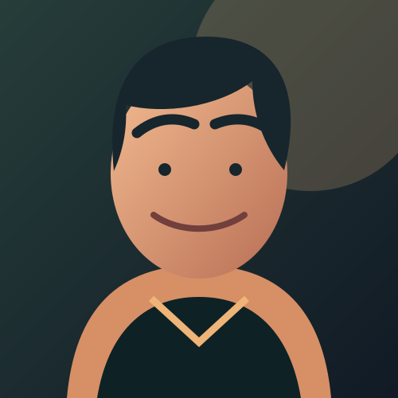

Portfolio qiymati$4.2M
94% KPITransformation · SaaS2026
Atlas
Transformation
Besh bo‘lim va 40 kishilik jamoani yagona roadmap atrofida birlashtirgan raqamli transformatsiya dasturi.
Keysni ko‘rish↗Men Madina — strategiya, jamoa va ijroni bir yo‘nalishga birlashtirib, murakkab tashabbuslarni o‘lchanadigan biznes natijasiga olib boradigan loyiha menejeriman.

PROFIL
Strategiya, jamoa koordinatsiyasi va o‘lchanadigan natija birlashgan uch muhim tashabbus.
Besh bo‘lim va 40 kishilik jamoani yagona roadmap atrofida birlashtirgan raqamli transformatsiya dasturi.
Keysni ko‘rish↗Bankning yangi mobil mahsulotini 14 haftada discovery’dan bozorga olib chiqqan cross-functional loyiha.
Keysni ko‘rish↗Uchta jamoaning rejalash, risk va status jarayonlarini yagona delivery tizimiga birlashtirgan operatsion transformatsiya.
Keysni ko‘rish↗Men jamoalarga nima muhimligini anglash, kelishuvga erishish va natijani o‘z vaqtida yetkazishga yordam beraman.
Ishim strategik rejalash, ochiq kommunikatsiya va tartibli ijro kesishgan nuqtada. Har bir qarorni biznes qiymati, foydalanuvchi ehtiyoji va jamoaning real imkoniyati bilan bog‘layman.
Ishonchli tashabbuslarni boshqarish va professional mahoratni muntazam rivojlantirish yo‘li.
Olti kishilik mahsulot jamoasini boshqardim, API kechikishini 47% kamaytirdim va 30 mingdan ortiq jamoa ishlatadigan tahlil platformasini yetkazdim.
Cloud-native servislar va accessibility talablariga mos React interfeyslarini qurib, reliz davriyligini oylikdan haftalikka olib chiqdim.
Kasbiy qarashlarimni shakllantirgan ta’lim va sertifikatlar.
Imtiyozli diplom. Asosiy yo‘nalishlar: strategik boshqaruv, operatsion menejment va raqamli mahsulotlar.
Kasbiy bilimni tasdiqlaydigan sertifikatlar va amaliy tajriba.
Jarayon, jamoa va mahsulot yetkazish haqida fikrlar.
Noaniqlikni roadmap, ochiq kelishuvlar va kichik tajribalar orqali boshqarish bo‘yicha amaliy qo‘llanma.
Maqolani o‘qish ↗Xalqaro jamoalarda professional muloqot.
Ona tili
C1 · Professional
B2 · Professional
Natija ortidagi jarayon, saboq va jamoa hikoyalari.
12 oylik transformatsiya dasturini muvaffaqiyatli yakunlab, 4 ta jamoa va 3 ta bozorni yagona ritmga olib chiqdim.
Kasbiy faoliyatim, jamoa ishlari va kundalik qaydlarimni kuzating.